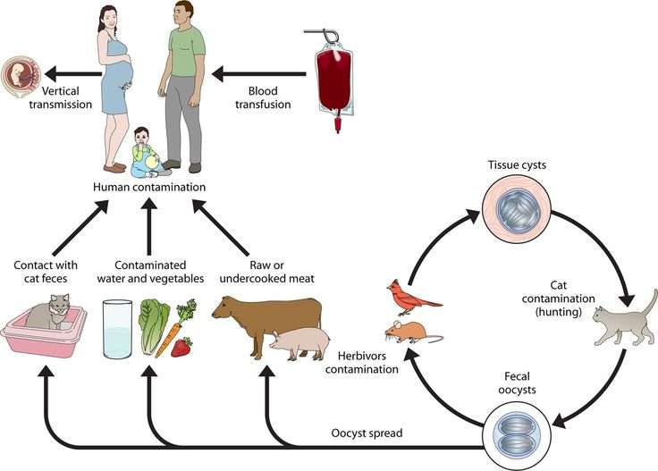

Dichtbevolkte aarde
De belangrijkste oorzaak is de dichtbevolkte aarde. We zitten hier met teveel mensen op aarde, waardoor er weinig ruimte is om afstand te kunnen nemen van dieren. Daarnaast moeten we ook veel voedsel verbouwen en huizen bouwen, doordat er veel mensen op aarde zijn. Hierdoor moeten we veel bossen en oerwouden kappen om grond te winnen, wat ervoor zorgt dat dieren kleinere leefgebieden krijgen en wij vaker met dieren in contact komen. Veel landgebruik wordt deels ook als oorzaak gezien van zoönosen. Door een massa aan mensen op de wereld is er ook veel vraag naar voedsel. We zijn meer landbouw gaan houden, wat voor meer tussengastheren zorgt waardoor ziekten makkelijker overgebracht kunnen worden op de mens. (Milieurecht, 2020)
Bushmeat & dierenmarkten
Een andere oorzaak is bushmeat. Bushmeat is vlees dat afkomstig is van jacht op wilde dieren (Encyclo.nl, 2022). Dit soort vlees is van niet gedomesticeerde reptielen, amfibieën, zoogdieren en vogels. Op deze soorten wordt gejaagd voor voedsel of ander gebruik. Vaak gebeurt dit in delen van Azië en Afrika in gebieden, zoals het bos, de savanne en wetlands. Bushmeat is erg populair bij de lokale bevolking. Bushmeat kan zorgen voor een zoönose wanneer de lokale bevolking jaagt op een besmet exotisch dier. Als ze dit vlees dan ook niet goed verhitten, lopen ze gevaar op een infectieziekte die dan verder verspreid kan worden onder de mensen. (Bebiodiversity, 2022). Naast bushmeat heb je ook dierenmarkten. Dit zijn grote markten waar verschillende wilde dieren verkocht worden als voedsel. De omstandigheden op deze markten zijn erg slecht. (Zieke) dieren zitten te dicht op elkaar en qua hygiëne wordt er niet echt opgelet. Vaak zitten er dan een paar besmette dieren tussen die dan onderling ziekten verspreiden. Zodra iemand een besmet dier koopt en dit eet, raakt die zelf ook besmet en kan de infectieziekte zich weer verder verspreiden onder de mensen. Uiteindelijk krijg je dus een zoönose. (Nature Today, 2020).
Klimaatverandering
Klimaatverandering wordt ook als een oorzaak gezien. Door een versterkt broeikaseffect door de broeikasgassen, zoals koolstofdioxide en methaan neemt de temperatuur op aarde toe. Hierdoor stijgt de zeespiegel; ontstaan er op veel plekken verwoestijningen en krijgen we extreme weersomstandigheden. (Gommers, 2019). Door deze cruciale gevolgen verandert de leefomgeving van veel dieren en worden deze gebieden steeds kleiner. Veel wilde dieren proberen naar de steden te komen voor een betere leefgebied en om voedsel te zoeken. Dit zorgt ervoor dat mensen steeds vaker in contact kunnen komen met dieren. Hierdoor zou een ziekte makkelijker overgebracht kunnen worden op mensen en dus kunnen zorgen voor een zoönose. (Milieurecht, 2020).

Bronnen